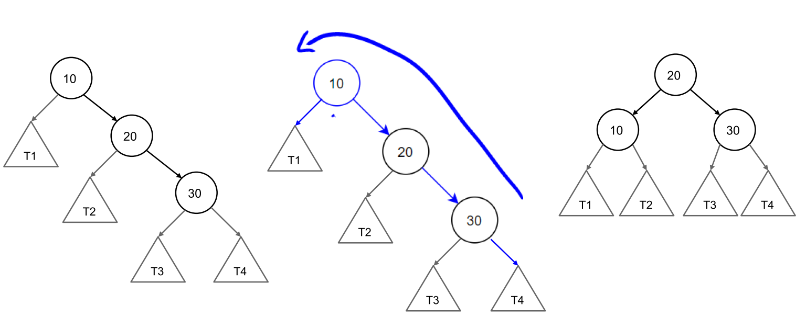
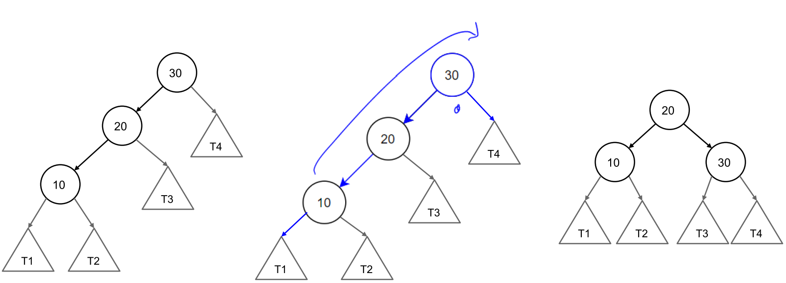
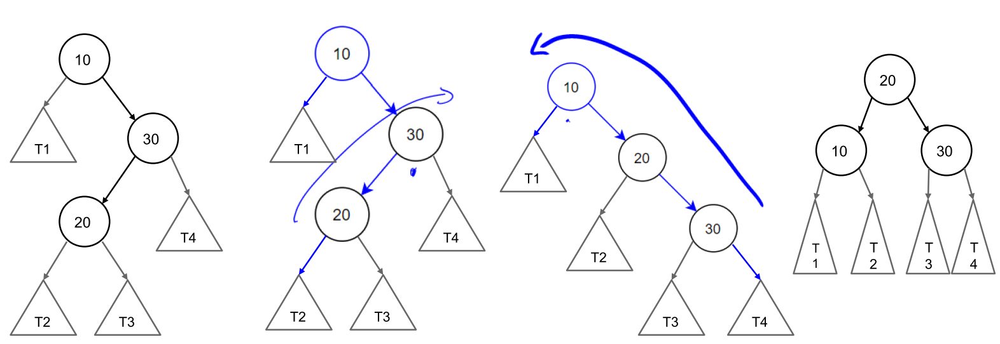
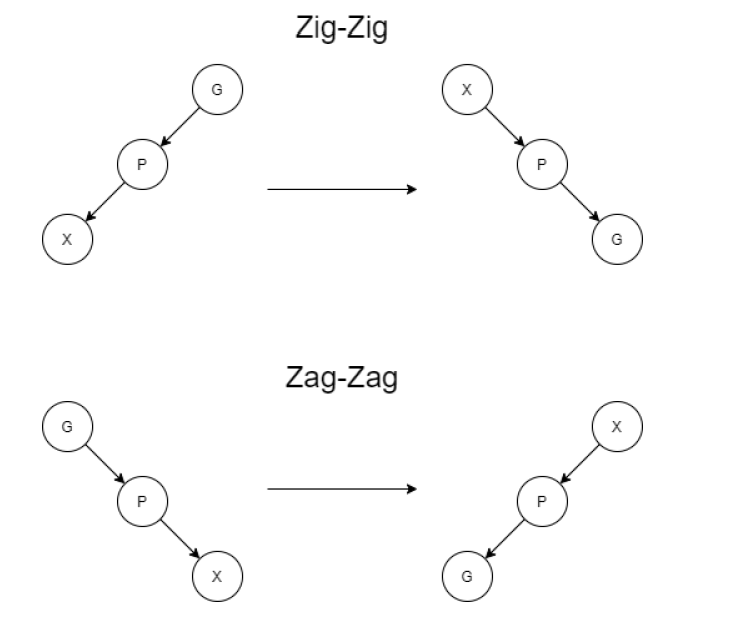
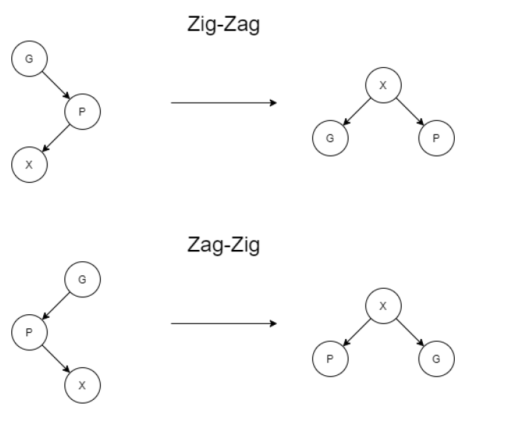

AVL Trees
Finding the imbalanced node
- Look at the height of the left and the right subtrees. If the height difference is more than 1 between both subtrees, then the node is imbalanced.
Insert into an AVL tree
- Regular insert if no imbalance
- Tri-node restructuring if there is an imbalance
Tri node restructuring
- Only four cases of tri-node restructuring:
Right-right rebalance:
- push the imbalanced node down

Left-left rebalance:

Right-left
- lift 20 up and drag 20 down to create a right-right imbalance

Delete from an AVL tree
- Remove from tree as if a Binary search tree
- From the deleted node, move up to the first unbalanced node.
- Tri-node Restructuring to restore height property
Performance:
- Height:
- Space
Runtime
- Single restructure: O(1)
- Searching: O(log n) (IN BST, O(n))
- Insertion: O(log n) (IN BST, O(n))
- Removal: O(log n) (IN BST, O(n))
Splay tree
- Nearly balanced binary search tree
- no rules on height
- faster access to most recently used keys
- all operations require a 'splay'
Finding node
- same as a binary search tree
- 'Splay' the node up to the root
- Even if you don't find the node, still splay the whole tree
- i.e. searched item becomes the new root

Zig-zag: rotate the tree to the left and swap the root with the right child Zag-zig: rotate the tree to the right and swap the root with the left child

Insert into the splay tree
- INsert into the tree.
- 'splay' the new inserted node to the root
Remove from a Splay tree
- Remove a node like a Binary Search Tree
- “Splay” a up to the root
- If you don't find the node: Splay the node that ended your search
- If you do find the node: Splay the parent of the removed node
2-4 trees
- Balanced binary search trees
- Nodes can have:
- 1 key, 2 children
- 2 keys, 3 children
- 3 keys, four children